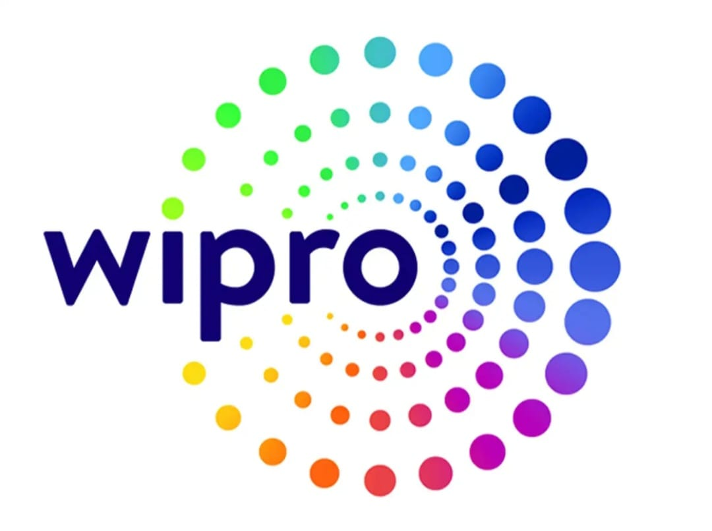
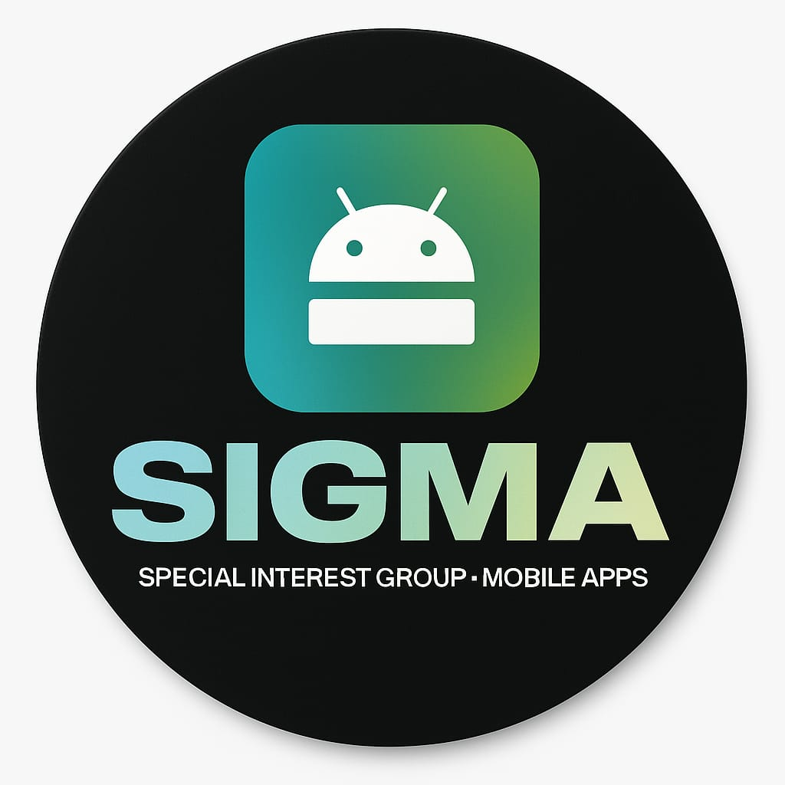
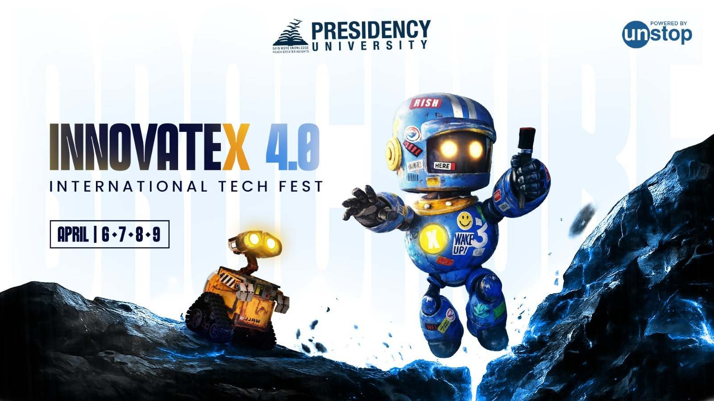
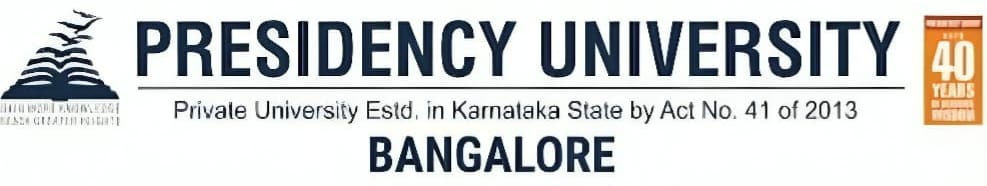

• Developed AI-driven content for animation and e-learning platforms using modern AI tools.
• Worked with Moodle, Xperiencify, FlexClip, and PlayHT for content creation.
• Designed interactive multimedia learning modules to improve engagement.
• Automated video editing and voice generation workflows using AI tools.
• Gained practical exposure to real-world AI applications in digital content production.

President | Vice-President | Social Media Outreach
• Progressed from Social Media Outreach → Vice-President → President, showing strong leadership growth.
• Led a team of 50+ members managing club operations and technical initiatives.
• Organized hackathons, coding competitions, and technical workshops.
• Collaborated with faculty and industry experts for successful event execution.
• Mentored students in programming, DSA, and Android development.
• Increased student engagement and participation through structured outreach strategies.

• Managed execution of a national-level technical fest with 5000+ participants.
• Led cross-functional teams ensuring smooth coordination and planning.
• Successfully handled multiple technical event tracks simultaneously.
• Increased participation and engagement significantly through strategic planning.
• Delivered a grand successful event recognized at an international level.

• Assisted in organizing technical and non-technical events at university level.
• Coordinated student participation and ensured smooth event execution.
• Supported peer learning and student development initiatives.
• Contributed to improving engagement in campus activities.
• Gained experience in teamwork, leadership, and event coordination.